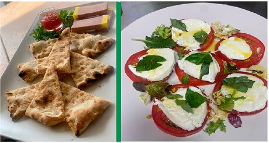
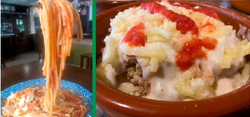
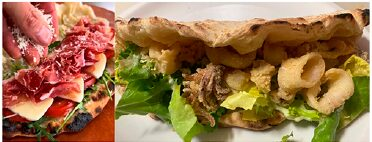
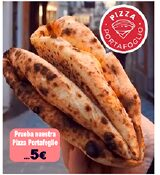

Para empezar
Entrantes

Piadina
3,90 €Nuestra masa napolitana, AOVE
Pan de ajo
5,50 €Nuestra masa napolitana rellena de mozzarella, tomate, ajo.
Paté piadina
10,00 €El mejor paté acompañado de nuestra base napolitana.
Provolone pizzaiola
12,00 €Queso Provolone, tomate San Marzano, orégano, AOVE.
Mozzarella al horno
10,00 €Nuestra Fior di Latte, tomate San Marzano, orégano, AOVE.
Minicalzone fromaggio
8,00 €Nuestra masa napolitana rellena con 4 tipos de queso.
Patatas bravas
8,00 €Patatas gajo con nuestra salsa brava (picante).
Patatas locas
9,00 €Patatas especiadas, salsa blanca, salsa ranchera, bacon crunchy, mezcla de quesos gratinados.
Nuggets de pollo
7,50 €Auténticos nuggets de pollo con patatas fritas.
Frescas
Ensaladas
Capresse
9,00 €Tomate selección, mozzarella fresca, rúcula, orégano, AOVE.
Ensalada César
10,00 €Mezcla de lechugas, pollo crunchy, croutons, queso, cebolla krispy, york, salsa césar.
Ensalada Tropical
9,00 €Mezcla de lechugas, maíz, york, piña, zanahoria, croutons, surimi de cangrejo, salsa rosa.
Ensalada Mixta
8,00 €Mezcla de lechugas, tomate, maíz, zanahoria, aceitunas, atún, remolacha.
Para los hambrientos
Burguer / Food
Burguer Pollo
7,80 €Pollo crunchy, lechugas, tomate, queso, cebolla caramelizada, salsas y patatas fritas.
Burguer Clásica
7,00 €Ternera 100%, lechugas, tomate, queso, salsas y patatas fritas.
Cheese Burguer
8,50 €Ternera 100%, lechugas, tomate, queso, bacon, huevo, salsas y patatas fritas.
Burguer Pica Loco
8,00 €Ternera 100%, lechugas, tomate, queso, cebolla crujiente, jalapeños, salsas y patatas fritas.
Costillar barbacoa
18,00 €Costillas de cerdo marinadas en salsa barbacoa al horno y patatas gajo.
Polpette pizzaiola
14,00 €Polpettes de carne, tomate San Marzano, queso parmesano, albahaca, AOVE. Acompañado de nuestra masa napolitana.
Hechas con cariño
Pastas

Tortiglioni horno
12,00 €Tortiglioni, tomate, nata, champiñón, m. pizza, carne boloñesa, huevo duro, mozzarella y AOVE.
Lasaña boloñesa
12,00 €Pasta, salsa boloñesa, bechamel, mozzarella, parmesano.
Lasaña vegetal
12,00 €Pasta, vegetales, bechamel, tomate, mozzarella, parmesano.
Berenjenas parmesana
12,00 €Berenjenas, tomate San Marzano, bechamel, mozzarella, parmesano.
Espaguetis carbonara
10,00 €Pasta, crema de nata, bacon, huevo, pimienta.
Espaguetis boscaiola
9,00 €Pasta, york, champiñón, tomate San Marzano, nata, parmesano.
Tortiglioni o gnocchi boloñesa
9,00 €Pasta, salsa boloñesa, tomate San Marzano.
Tortiglioni o gnocchi 4 quesos
10,00 €Pasta, crema de nata, mix 4 tipos de queso.
Tortellini ricota / espinacas
12,00 €Tortellini, crema de albahaca, nueces, parmesano.
Ravioli de carne
12,00 €Ravioli, salsa pesto, parmesano.
Pappardelle funguiporcini
12,00 €Pappardelle, nata, parmesano, salsa tartufata, mix de fungui e porcini.
Nuestras pizzas
Pizzas clásicas

Margarita
9,00 €Tomate San Marzano, Fior di latte, albahaca, AOVE.
Marinara
8,00 €Tomate San Marzano, ajo, AOVE, orégano.
Prosciutto
10,00 €Tomate San Marzano, Fior di latte, jamón cocido, albahaca.
Pepperoni
10,00 €Tomate San Marzano, Fior di latte, pepperoni, albahaca.
Romana
11,50 €Tomate San Marzano, Fior di latte, jamón cocido, champiñón, albahaca.
Pizza Loco
11,50 €Tomate San Marzano, Fior di latte, atún, cebolla, albahaca.
Napolitana
12,00 €Tomate San Marzano, Fior di latte, anchoas, alcaparras, aceitunas negras.
Venta
12,00 €Tomate San Marzano, Fior di latte, chorizo picante, cebolla, aceitunas negras.
Vegetal
12,00 €Tomate San Marzano, Fior di latte, champi, cebolla, pimiento, calabacín.
Cuatro estaciones
12,50 €Tomate San Marzano, Fior di latte, jamón cocido, champiñón, alcachofas, atún (a cuartos).
Carbonara
12,50 €Crema de nata, Fior di latte, bacon, champiñón, cebolla, huevo, pimienta.
Barbacoa
12,50 €Tomate San Marzano, Fior di latte, carne boloñesa, cebolla, bacon, salsa barbacoa.
Cuatro quesos
12,50 €Tomate San Marzano, Fior di latte, mix 4 tipos de queso, albahaca.
Tropical
11,00 €Tomate San Marzano, Fior di latte, jamón cocido, piña, albahaca.
Kebab
13,00 €Tomate San Marzano, Fior di latte, pollo estilo kebab, salsa blanca.
La casa recomienda
Pizzas especiales
Amatriciana
14,00 €Tomate San Marzano, Fior di latte, cebolla, virutas de torrezno, tomate seco, albahaca.
Cinco quesos
14,00 €Fior di latte, gorgonzola, ricotta, parmesano, cheddar.
Capricciosa
14,50 €Tomate San Marzano, Fior di latte, p.cotto, champiñón, alcachofas, atún, anchoas, aceitunas negras, albahaca.
Lago di Como
14,50 €Tomate San Marzano, Fior di latte, p.cotto, champiñón, pimiento, carne boloñesa, roquefort.
Mare e Monti
14,50 €Tomate San Marzano, Fior di latte, gambas, champiñón, roquefort.
Granola
14,00 €Tomate San Marzano, Fior di latte, queso de cabra, cebolla caramelizada, nueces, miel.
Suprema
14,00 €Crema de nata, Fior di latte, mix de hongos, virutas de torreznos, cebolla caramelizada, salsa tartufada.
Serrano rúcula
14,50 €Tomate San Marzano, Fior di latte, j. serrano duroc, tomates cherry, rúcula, parmesano y AOVE.
Bolognese
14,00 €Tomate San Marzano, Fior di latte, mortadela, pistachos, carne boloñesa, ricotta, albahaca.
Antonia
14,00 €Tomate San Marzano, Fior di latte, manzana, morcilla, queso de cabra, cebolla caramelizada.
Mortalla
15,50 €Tomate San Marzano, Fior di latte, mortadela de pistacho, burrata, parmesano, pistachos, pesto.
Búfala
14,00 €Tomate San Marzano, mozzarella de búfala, rúcula, tomates cherry, parmesano, AOVE.
Mexicana
14,00 €Tomate San Marzano, Fior di latte, carne boloñesa, cebolla, albahaca, jalapeños y salsa chipotle.
Secreto
14,50 €Tomate San Marzano, Fior di latte, tomate seco, secreto ibérico, pesto o tartufata, albahaca y AOVE.

Rellenos
Panouzzo
Romana
12,50 €Ricotta, mix lechugas, mahonesa o alioli, calamares a la romana.
Mortadela
14,00 €Ricotta, mix lechugas, mortadela de pistacho, burrata, salsa pesto.
Serrano
14,00 €Ricotta, mix lechugas, jamón serrano duroc, tomates secos, parmesano y AOVE.
Polpette
12,50 €Polpettes de carne con tomate, gorgonzola, parmesano, albahaca.
Salsiccia
10,00 €Ricotta, mix de lechugas, salsas, salsiccia original, cebolla crispy, tomates secos, remolacha.
Para terminar
Postres
Tiramisú
5,00 €Dulce de bizcocho, mascarpone, crema pastelera, nata, café, cacao.
Tarta de queso
5,00 €Combinación de quesos, nata y huevos al horno con toque de fresa.
Tarta al whiski
6,00 €De fabricación granaína.
Calzone de Nutella
9,00 €Masa napolitana, nutella, azúcar glas, pistacho.
Gofre de chocolate
5,50 €